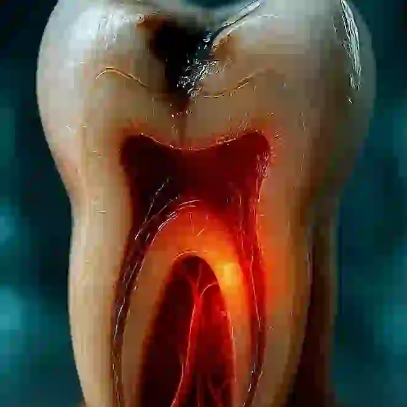
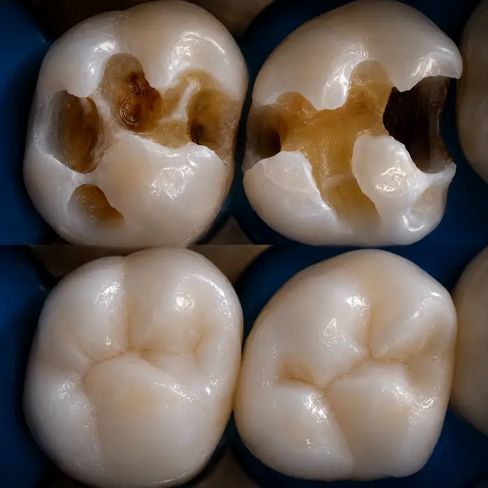
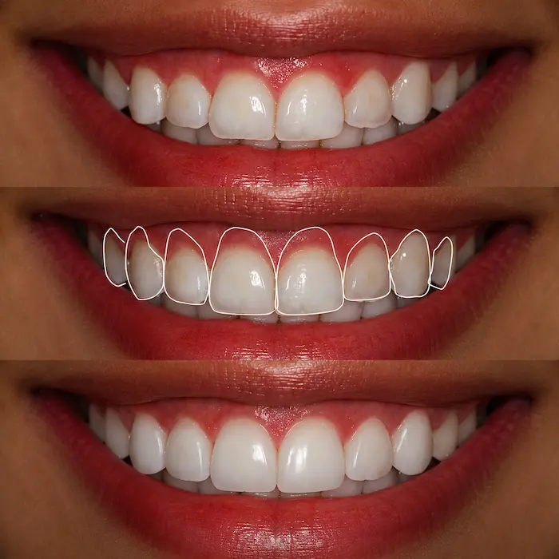
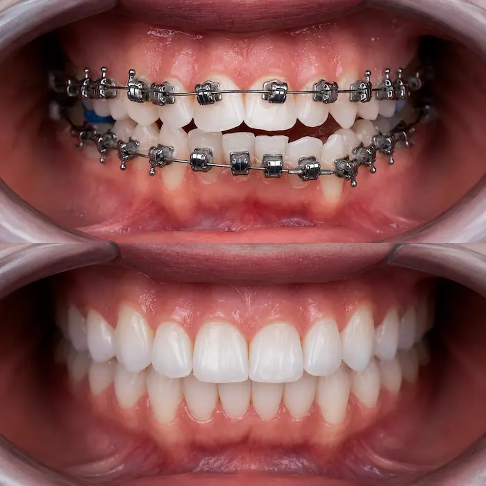

Alívio rápido
Tratamos a causa da dor com prioridade, não só o sintoma.
Urgência odontológica 24h
Canal inflamado, prótese quebrada, problema com implante ou mau hálito persistente — fale com a Dentalli. Plantão 24h, todos os dias, na unidade Presidente Kennedy.

Cada situação tem um cuidado diferente — conte o que está acontecendo e a equipe já orienta o melhor caminho.
Se você se identificou com algum desses sinais, não espere a dor piorar.
Falar com a Dentalli agoraAdiar um problema de urgência pode agravar a dor e aumentar o risco de perda do dente ou do trabalho já feito.
Tratamos a causa da dor com prioridade, não só o sintoma.
Agir cedo evita perder um dente, um implante ou uma prótese.
Tratar cedo reduz o risco de infecção, inchaço e dor mais forte.
Equipe especializada em cada etapa, do diagnóstico à finalização.
Conte o que está sentindo e sua localização.
A equipe orienta o atendimento no plantão 24h da unidade Presidente Kennedy.
Diagnóstico rápido e explicação clara do problema.
Início do tratamento com foco em resolver a dor.
Avaliação sempre gratuita, sem taxa abusiva de urgência. Chame no WhatsApp e nossa equipe orienta o próximo passo com clareza, sem promessa genérica.
Conheça as especialidades da Dentalli. Toque em qualquer card pra falar direto com a equipe no WhatsApp.

Fratura e trauma, atendimento imediato.
Falar no WhatsApp →
Alívio da dor e tratamento endodôntico.
Falar no WhatsApp →
Reabilitação com segurança e conforto.
Falar no WhatsApp →
Polimento, limpeza e reparo de urgência.
Falar no WhatsApp →
Estabilidade e excelente adaptação.
Falar no WhatsApp →
Removíveis e fixas, conforto ao sorrir.
Falar no WhatsApp →
Sisos e dentes inflamados com urgência.
Falar no WhatsApp →
Resolva sensibilidade e estética.
Falar no WhatsApp →
Estética com resultado natural.
Falar no WhatsApp →
Correção do sorriso gengival.
Falar no WhatsApp →
Corrija o posicionamento dos dentes.
Falar no WhatsApp →
Cuidado infantil com acolhimento.
Falar no WhatsApp →A rede Dentalli tem 11 unidades em Fortaleza. O plantão 24h desta página fica na unidade Presidente Kennedy.
Av. Dr. Theberge, 2111 - Presidente Kennedy, Fortaleza - CE, 60335-480
Plantão 24h, todos os dias · (85) 99260-4260
Você é avaliado antes de qualquer procedimento. A equipe explica o que está acontecendo e qual o melhor caminho para resolver sua urgência.
4,9 ★ de média com mais de 940 avaliações reais, somando todas as unidades Dentalli em Fortaleza.
"Precisei dele em um momento de muita dor, durante um feriado, e ele foi impecável. Resolvemos tudo da melhor forma."
Thiago Cabral"Meu atendimento com Dr. Carlos tem sido muito excelente, desde o primeiro momento. Super indico!"
Cristina Lima Santos"Excelente profissional! Atendimento atencioso, cuidadoso e muito competente. Recomendo demais."
Alia BarbosaSim. A Dentalli oferece atendimento de urgência para dor de dente intensa, inclusive de madrugada. Plantão 24h, todos os dias, na unidade Presidente Kennedy.
Avaliamos a extensão do dano pelo WhatsApp e já orientamos se dá pra resolver no mesmo atendimento.
Sim, para casos de dor forte, inflamação ou infecção, com foco em aliviar a dor e iniciar o tratamento com segurança.
Fale com a gente pelo WhatsApp descrevendo o sintoma. A equipe avalia se é preciso atendimento imediato ou uma consulta de checagem.
Na Dentalli Presidente Kennedy: Av. Dr. Theberge, 2111 - Presidente Kennedy, Fortaleza - CE, 60335-480. Plantão 24h, todos os dias. A rede Dentalli tem 11 unidades em Fortaleza.
Fale agora com a Dentalli e seja atendido com urgência.
Quero atendimento agoraAtendimento rápido